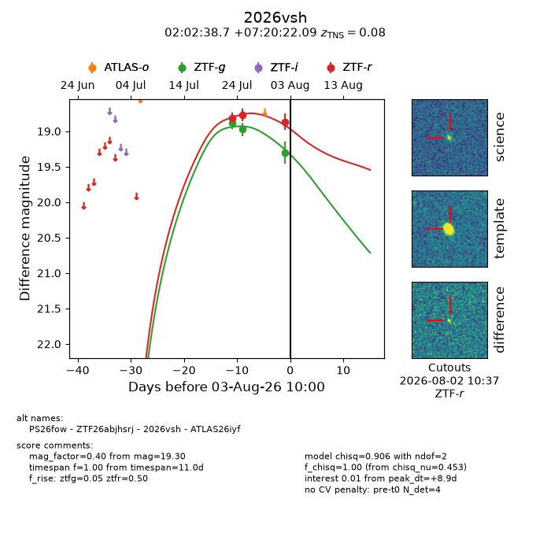
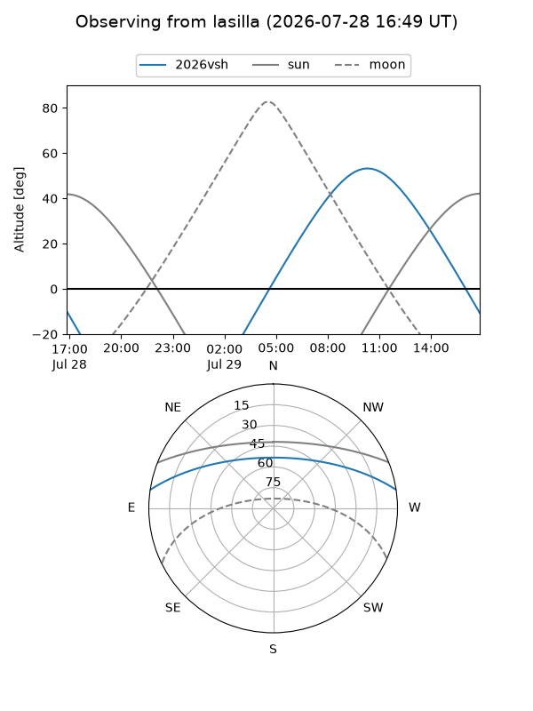
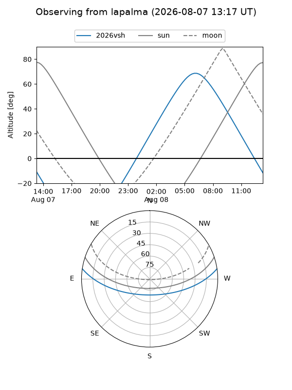
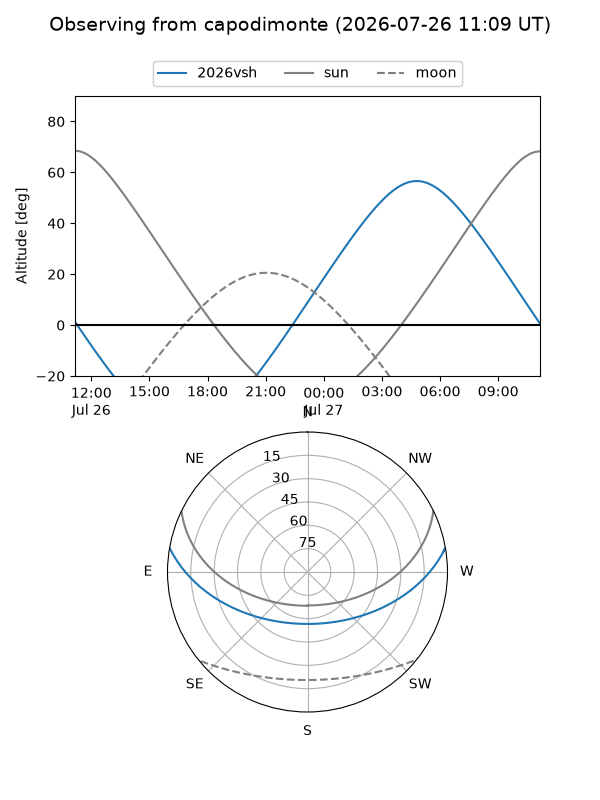
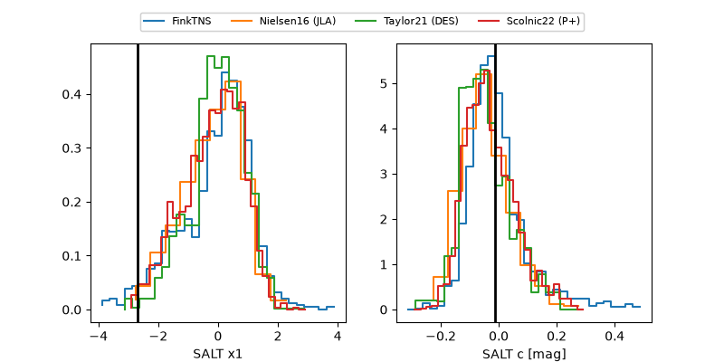

2026vsh
Target 2026vsh at 2026-08-03 10:02
Aliases and brokers:
FINK-ZTF: ztf.fink-portal.org/ZTF26abjhsrj
Lasair-ZTF: lasair-ztf.lsst.ac.uk/objects/ZTF26abjhsrj
ALeRCE-ZTF: alerce.online/object/ZTF26abjhsrj
YSE-PZ: ziggy.ucolick.org/yse/transient_detail/2026vsh
TNS name: wis-tns.org/object/2026vsh
Direct TNS query: direct search
alt names
ZTF26abjhsrj (ztf,fink_ztf)
2026vsh (tns,yse)
PS26fow (panstarrs)
ATLAS26iyf (atlas)
Coordinates:
equatorial (ra, dec) = 30.6613,+7.33947
equatorial (HMS+DMS) = 02:02:38.71,+07:20:22.09
galactic (l, b) = (152.0539,-51.46074)
Flags:
TNS type: SN Ia
TNS redshift: 0.0800
peak dt: +8.9
Photometry:
last ztfg=19.30, ztfr=18.86
3 ztfg, 3 ztfr detections
Lightcurve

Visibility



Additional plots
